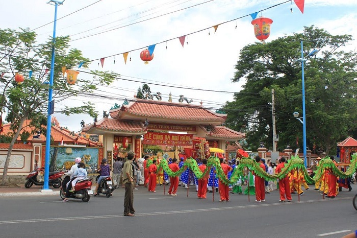
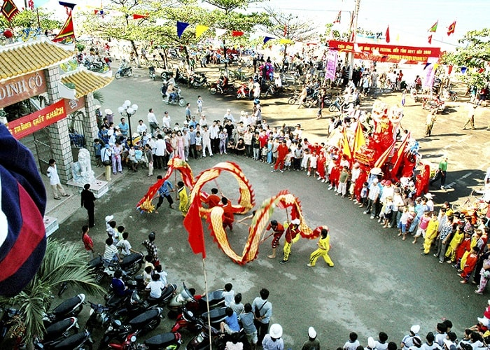
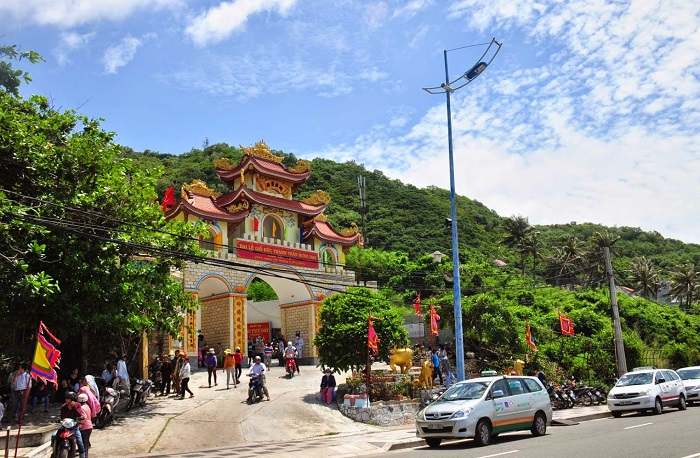
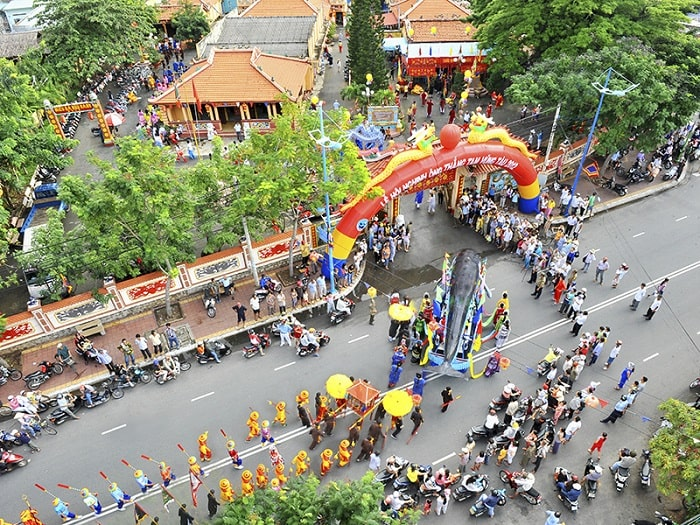
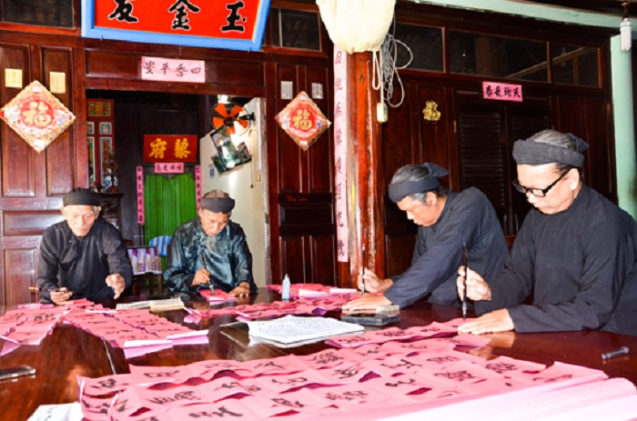
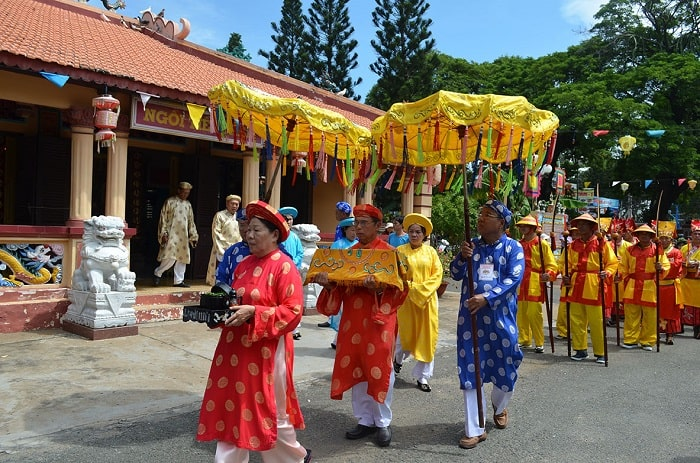

1. Lễ hội Đình Thần Thắng Tam
Thứ bảy - 11/06/2019 09:23
Lễ hội Đình Thần Thắng Tam là một trong những lễ hội lớn tại Vũng Tàu đồng thời nằm trong top 15 lễ hội lớn nhất cả nước.
Lễ hội được tổ chức tại Ðình Thần Thắng Tam (77 Hoàng Hoa Thám, Phường Thắng Tam) - nơi thờ 3 người đã có công gây dựng
3 làng Thắng ở Vũng Tàu. Mỗi năm từ ngày 17 - 20 tháng 2 âm lịch Đình đón gần 5000 người về tham dự, sự kiện kéo dài trong 4 ngày.
Lễ Đình Thần Thắng Tam được tổ chức nhằm mục đích cầu an, nhân thời điểm kết thúc và mở đầu cho một mùa thu hoạch tôm cá.

Các hoạt động diễn ra ngay bên ngoài cửa Đình
2. Lễ hội Dinh Cô
Thứ bảy - 11/06/2019 09:23
Dinh Cô là Di tích lịch sử cấp Quốc gia rộng tới 1000m2 nằm bên bờ biển Long Hải của tỉnh Bà Rịa – Vũng Tàu.
Đây là nơi diễn ra lễ hội Dinh Cô (10 – 12/2 Âm lịch hàng năm) thu hút hàng vạn du khách đến tham dự mỗi lần tổ chức.
Lễ hội nhằm cầu mưa thuận gió hòa, đồng thời suy tôn “Cô” (Lê Thị Hồng Thuỷ) – Nữ thần thiêng liêng được trời
ban xuống cho làng Long Hải. Bởi vậy người thập phương đến khấn vái cô ngày 10/2 phải mang theo 1 nhành huệ trắng
tượng trưng cho sự thuần khiết; tiếp đó đêm cùng ngày và ngày 11/2 diễn ra lễ hội hoa đăng hàng vạn ghe thuyền quay
mũi về Dinh chầu cô, tiếng trống, tiếng chuông suốt cả đêm. Sáng 12/02, đoàn người tổ chức lễ “Nghinh Cô” về dinh trên biển.

Múa rồng thu hút đông đảo người dân tới xem
3. Lễ giỗ Đức Thánh Trần Hưng Đạo
Thứ bảy - 11/06/2019 09:23
Dân gian có câu “Tháng tám giỗ cha, tháng ba giỗ mẹ”, "cha" ở đây là Đức Thánh Trần. Mỗi 20/8 Âm lịch hàng năm,
tại Đền thờ Đức Thánh Trần Hưng Đạo, TP. Vũng Tàu (số 68, Hạ Long, Phường 2) đều diễn ra lễ giỗ Quốc công tiết
chế Hưng Đạo vương Trần Quốc Tuấn. Lễ giỗ kéo dài 3 ngày được tổ chức với những nghi thức cúng tế truyền thống,
mang đậm bản sắc văn hóa Việt và từ lâu đã không còn chỉ bó hẹp trong phạm vi địa phương mà thu hút nhiều người
ừ các địa phương trong cả nước.

Đền thờ Đức Thánh Trần Hưng Đạo tại thành phố Vũng Tàu
Người ta tham gia lễ hội lớn tại Vũng Tàu này để tưởng nhớ về cuộc đời, sự nghiệp của vị anh hùng kiệt xuất;
hành động dâng hương, hoa, lễ vật thể hiện lòng thành kính, biết ơn vị tướng tài của dân tộc. Thông qua đó,
lễ hội cũng mang ý nghĩa giáo dục các thế hệ nối tiếp nhau về lòng yêu nước, tự hào dân tộc.
4. Lễ hội nghinh Ông
Thứ bảy - 11/06/2019 09:23
Theo quan niệm của ngư dân miền biển Vũng Tàu, cá Ông (cá voi) là vị cứu tinh, phù trợ cho họ mỗi lúc
tàu gặp nạn trên biển. Vì vậy lễ hội Nghinh Ông được tổ chức long trong hàng năm từ ngày 16 – 18 tháng 8
âm lịch tại lăng Cá Ông ở đường Hoàng Hoa Thám, thành phố Vũng Tàu. Đây là lễ hội nước lớn nhất của ngư dân
Vũng Tàu đã được Tổng cục du lịch công nhận là 1 trong 15 lễ hội lớn nhất cả nước.

Lễ hội chuyển tải ước mong biển thuận gió hòa
Các hoạt động thường thấy tại lễ hội Nghinh Ông là rước cá ông trên biển, lễ cúng các anh hùng liệt sĩ,
hát bá chạo, hát bội, biểu diễn võ thuật, múa lân rồng, diễn tuồng cùng các trò chơi dân gian như:
bịt mắt bắt dê, câu cá, bịt mắt đập niêu…
5. Lễ Hội Trùng Cửu
Thứ bảy - 11/06/2019 09:23
Một trong những lễ hội lớn tại Vũng Tàu phải kể đến lễ hội Trùng Cửu diễn ra vào 19/09 Âm Lịch. Lễ hội được
tổ chức tại đảo Long Sơn, theo tích xưa rằng trước kia ở xã ông Long Sơn, Vũng Tàu có ông Lê Văn Mưu (dân gian
gọi là ông Trần) tham gia cuộc khởi nghĩa chống lại thực dân Pháp. Tuy nhiên, do cuộc khởi nghĩa thất bại,
ông cùng gia đình về ẩn náu tại phía Đông núi Nữa, thành lập nên ấp Bà Trao (nay là xã Long Sơn). Tại đây,
ông đã cất công xây dựng công trình Nhà Lớn – nơi thờ Thánh, Tiên, Phật; cũng như dựng các ngôi nhà,
mở đất, mở làng… Lễ hội Trùng Cửu ra đời nhằm tưởng nhớ đến công lao của ông.

Các ông đồ viết liễn trang trí nhân lễ hội Trùng Cửu
6. Lễ hội Miếu Bà Ngũ Hành
Thứ bảy - 11/06/2019 09:23
Miếu Bà Ngũ Hành nằm bên trái trong di tích đình thần Thắng Tam, được ngư dân Vũng Tàu lập nên để tôn
thờ 5 vị Thần nữ là: Kim, Mộc, Thủy, Hỏa, Thổ cùng Thủy Long Thần Nữ, Thánh Mẫu Thiên Y Ana, nên nhân
dân Vũng Tàu thường gọi là Bảy Bà.

Thỉnh Sắc thần vào ngôi miếu Bà
Lễ hội Miếu Bà Ngũ Hành được tổ chức vào các ngày 16, 17, 18/10 Âm lịch hàng năm với các nghi thức tế lễ
trang nghiêng, mở đầu là lễ rước cờ lọng; ngũ sự với tiếng kèn, tiếng trống vang dội. Kế tiếp là lễ nghinh
thỉnh Bà Thủy Long Thần Nữ tại miếu Hòn Bà ở Bãi Sau của mũi Nghinh Phong, nơi có cảnh quan thiên
nhiên tuyệt sắc và miếu Hòn Bà linh thiêng.
Tin liên quan: Những khu vực chính của du lịch Vũng Tàu